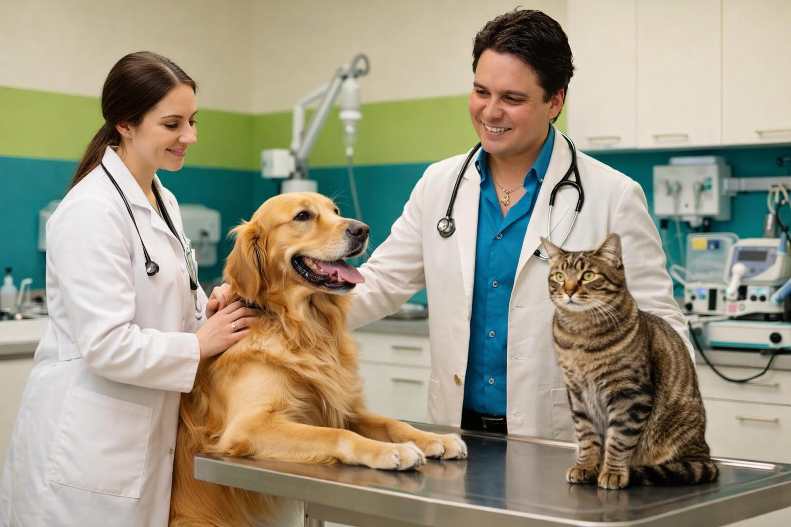

Nosotros
Cuidamos a las mascotas de la familia
En Veterinaria San Marcos nos preocupamos por la salud y bienestar de tus mascotas desde el 2009. Contamos con atención veterinaria para perros, gatos, conejos y aves.

Contactenos Vea nuestros serviciosServicios principales
- Consulta general
- Vacunación
- Cirugias
- Desparasitación